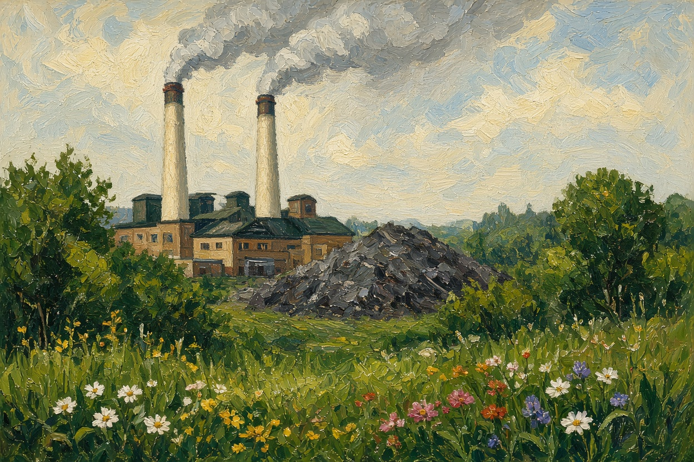

Fuels and the air around us Fuels and the environment דלקים והסביבה חומרי דלק ואיכות הסביבה
By the end of this page, say how burning fuels can harm the air and the ground. By the end of this page, explain how burning fuels can harm the air and the ground. בסוף העמוד תוכלו לומר איך שריפת דלקים יכולה להזיק לאוויר ולאדמה. בסוף העמוד תוכלו להסביר כיצד שריפת חומרי דלק עלולה להזיק לאוויר ולאדמה.
We burn fuels so we can use the light or the heat they give off. The many machines we run need huge amounts of fuel. We burn fuels in order to use the light or the heat they give off as they burn. The many machines we operate need enormous amounts of fuel. שורפים דלקים כדי להשתמש באור או בחום שהם נותנים. המכונות הרבות שאנחנו מפעילים צריכות המון דלק. שורפים חומרי דלק כדי לנצל את האור או את החום שהם פולטים בזמן השריפה. המכונות הרבות שאנו מפעילים דורשות כמויות גדולות מאוד של דלק.
The most important fuels in our lives today are coal, cooking gas, and, more than any other, the fuels that come from crude oil: gasoline, kerosene, diesel, and heavy fuel oil. Without them, factories could not make food, clothes, toys, and other things. We could not ride in cars, buses, and trains, or fly in planes. We could not make electricity either. The most important fuels in our lives today are coal and cooking gas, and above all the fuels that come from crude oil, such as gasoline, kerosene, diesel, and heavy fuel oil. Without them we could not run the machines in factories, where foods, clothes, toys, and many other goods are made. We could not travel by car, bus, or train, or fly by plane. We could not produce electricity either. הדלקים החשובים ביותר בחיינו היום הם פחם, גז בישול, ויותר מכולם הדלקים שבאים מנפט גולמי: בנזין, קרוסין, סולר ומזוט. בליהם בתי חרושת לא היו יכולים להכין מזון, בגדים, צעצועים ועוד. לא היינו יכולים לנסוע במכוניות, באוטובוסים וברכבות, או לטוס במטוסים. גם חשמל לא היינו יכולים להפיק. חומרי הדלק החשובים ביותר בחיינו כיום הם הפחם וגז הבישול, ויותר מכול חומרי הדלק שמפיקים מנפט גולמי, כמו בנזין, קרוסין, סולר ומזוט. בליהם לא ניתן היה להפעיל את המכונות בבתי החרושת, שבהם מכינים מזון, בגדים, צעצועים ועוד הרבה דברים. לא היינו יכולים לנסוע במכונית, באוטובוס או ברכבת, או לטוס במטוס. גם חשמל לא היינו יכולים להפיק בלעדיהם.
Life would surely be less comfortable without these fuels. But we must remember that using them, which helps us so much, also does a lot of harm. The air we breathe is less clean because of the smoke from burning fuel. The world around us looks worse because of the piles of ash and soot left behind. Our lives would surely be less comfortable without these fuels. Yet we must remember that using them, which brings us so much benefit, also brings a great deal of harm. The air we breathe is less clean because of the smoke given off when fuels burn. Our surroundings are spoiled by the piles of ash and soot that remain afterward. בלי הדלקים האלה החיים היו בוודאי פחות נוחים. אבל צריך לזכור שהשימוש בהם, שעוזר לנו כל כך, גם מזיק. האוויר שאנחנו נושמים פחות נקי בגלל העשן. הסביבה נראית פחות יפה בגלל ערימות האפר והפיח שנשארים. חיינו היו בוודאי נוחים פחות בלי חומרי הדלק האלה. אך עלינו לזכור שהשימוש בהם, שמביא לנו תועלת רבה, מלווה גם בנזקים. האוויר שאנו נושמים פחות נקי בגלל העשן הנפלט בשריפה. סביבתנו מתכערת בגלל ערימות האפר והפיח שנשארות אחר כך.
